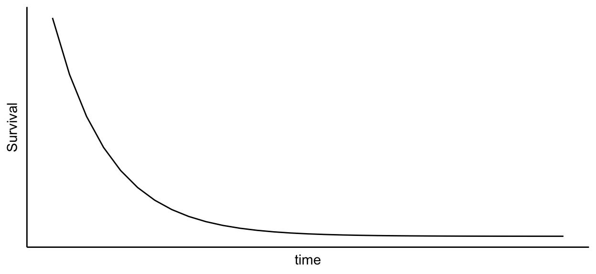
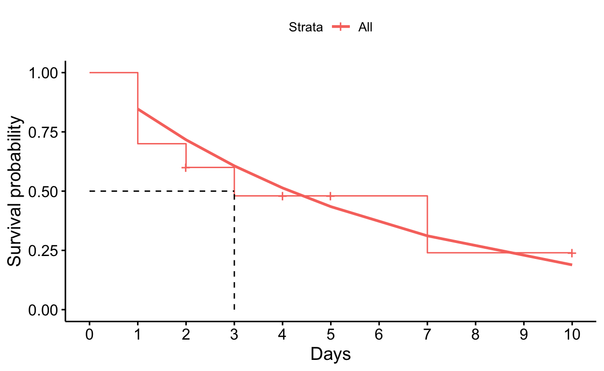

library(tidyverse) # data wrangling and visualization
library(sjPlot) # for plotting results of log.regr.
library(effects) # for probability output and plots
library(survival) # for core survival analysis routines
library(survminer) # for drawing survival curves
library(flexsurv) # for Parametric Survival Modelling
library(knitr) # for a wonderful-looking tables
Previous topics
A good understanding of Kaplan-Meier method (KM) is a prerequisite for this post, but since you are here, I suppose you are already familiar with it 😉
If you are more of a visual person, you can watch the video below first, but for more details and R-code have a look at the article.
Why do we need parametric survival models

The main disadvantage of the non-parametric Kaplan-Meier method (KM) shown in the picture above is that it can not be described survival probability by a smooth function, which means it can not predict anything. The parametric models (e.g. Exponential, Weibull etc.) can! Moreover, parametric models are the logical step on the way from the KM to the semi-parametric Cox models, because they beautifully connect the dots between KM and Cox models and thus greatly improve understanding of survival analysis. Besides, in case where parametric models are appropriate, they are more exact, more effective and more informative than KM or Cox. However, unfortunately, this step is often left out due to the rear use of parametric models. In this post we’ll try to close this gap.
Is Time a Variable or a Constant?
So, how can we describe the survival with a smooth function? To answer this question, let’s first describe a NOT-survival function, which happens to be a Hazard to die.

Image by Leonardo Yip on unsplash.
I’d describe death with two things: the event of death itself and a particular time point at which death happens. These two things always describe a single event, because one only dies 💀 once. However, if several people die 💀💀💀, they will not die in the exact same moment, right? Nop. Thus, the time of death would vary and the number of death would grow over time, which would make the time itself a variable. That’s how several events of death at different time points allow us to express death in two ways:
via a different number of events per fixed unit of time, which is often called a Risk (Hazard) to die, or simply Hazard (\(\lambda\) - lambda). This makes the number of events a variable, and Hazard a rate of death, e.g, per day. Or,
via different stretches of passing time per fixed number of events. The time interval is usually measured until the next event occurs. This makes the time a variable.
But whatever changes, the number of events per unite of time, or time per unit of events, the change itself is a key here, and there are different kinds of changes.
Steady change in hazard and survival
Imagine that every day exactly 3 out of 10 people die in the cold ocean water after Titanic accident. It’s a pretty stable rate of death, or Hazard, of 30%. If the hazard to die would steadily grow with the same rate, then the probability of survival would steadily decrease at the same rate. Thus, Hazard and Survival can be expressed in terms of each other. Particularly, the Hazard of dying over time can be seen as a Failed survival (\(F(t)\) in the left formula below). Or, the Survival over time (\(S(t)\) the right formula below) can be seen as the Hazard of NOT-dying, or simply a negative Hazard, which mathematically can be expressed as a “-” minus sign, or “1 -”, in front of the Hazard. Both functions result in straight lines, where Hazard steadily increases and survival steadily decreases (plots below):
\[ F(t) = Hazard * t \]
\[ S(t) = 1 - Hazard * t \]


Such steady increase or decrease in hazard or survival are rather not natural, not realistic. It’s kind of hard to plan and monitor death 😉, except you are a serial killer. The hazard usually either exponentially increases, e.g. in the case of hunger, or exponentially declines, e.g. in the case of a pandemic after vaccine was found. Thus, let’s have a look at both exponential changes.
Positive exponential change in hazard and survival
Think about hunger for a moment. It accumulates, right? And the longer we stay hungry, the higher is the probability (risk) that we die. The left plot below shows such a development, where a Hazard of dying \(F(t)\) expressed in probabilities is small in the beginning (few deaths), but grows exponentially with time (more and more deaths). I like to call such a trend a positive, or accelerating, exponential change. The “exp” in the left formula below is all we need to add in order to plot such a trend.
Again, since survival can be seen as a negative hazard, we can express the survival \(S(t)\) by simply using a minus sign (or “1-”) in front of the Hazard. The plot on the right displays the results of such survival function. It’s kind of obvious, that if the hazard of dying is low in the beginning of “time”, then the probability of survival is high. At the end of “time” Survival exponentially drops due to a exponential increase of the Hazard.
\[ F(t)= exp^{Hazard * t} \]
\[ S(t) = 1 - exp^{Hazard * t} \]


Negative exponential change in hazard and survival
However, in some cases, more people die at the beginning of “time”, where after rate of death declines over time. Think about a pandemic, or a titanic crash. The change is still exponential, and goes in the same direction: up, in the case of the Hazard, and down, in the case of survival. However, the exponential change is kind of turned (bend) inside out. I like to call it a negative, or decelerating, exponential change.
Such “inside out bending” can be achieved by a “-” minus sing in front of both a Hazard and the exponential function itself (left equation and picture below). This minus does not describe the negative hazard, as in the example above. It only changes the curve from accelerating to decelerating. In order to get survival for this function, we also, as in the example above, have to use a “-” (or “1-”) in front of the whole exponential hazard expression. Interestingly, two minus signs in front of the “exp” in the Survival formula neutralize each other and become a plus, which leaves us with the \(exp^{-Hazard * t}\) (right equation and picture below).
\[ F(t)= - exp^{-Hazard * t} \\\\\\\\\\\\\\\\\\\\\\\\\\\\\ \]

\[ S(t) = 1 - ( - exp^{-Hazard * t}) = exp^{-Hazard * t} \]

B(u)ilding Exponential model … finally 🥳

Image by Mihåly Köles on unsplash.
Now we finally have our smooth survival function we wanted to describe in the beginning. Let’s look at it one more time and plot it on top of the not-smooth Kaplan-Meier step function.
Since survival function \(S(t)\) shows the probability of survival passed the certain time point,
\[ S(t) = P(T > t) \]
and the exponential function \(F(t)\) shows the probability of Failed-survival passed the certain time point,
\[ F(t) = P(T \leq t) = 1 - exp^{-Hazard * t} \]
a survival function can then be expressed in terms of not-survival (exponential) function:
\[ S(t) = P(T > t) = 1 - P(T \leq t) = 1 - F(t) = 1 - [1 - exp^{-Hazard * t}] = exp^{-Hazard * t} \]
So that the survival function, which shows a rate of decrease, is a flipped hazard function, which showed a rate of increase. Thus, we can rewrite the \(S(t)\) as:
\[S(t) = exp^{- Hazard * t} = exp^{- \lambda* t} \]
where -Hazard and time are two parameters which describe our exponential change in survival probability, which is why such models do have their name - parametric exponential models. And since the Hazard is negative, and exponential function is not-linear (aka. curvy) - out model produces a negative exponential curve (see below). Such smooth rate of decrease describes survival probability much better then a Kaplan-Meier method, which abruptly (step-wisely) drops probability only after an event, while keeping the probability constant between the events.
How to compute parametric models
library(flexsurv) # for Parametric Survival Modelling
ex <- flexsurvreg(Surv(time, status) ~ 1, data = d2, dist="exponential")
we <- flexsurvreg(Surv(time, status) ~ 1, data = d2, dist="weibull")
ggsurvplot(
ex,
conf.int = FALSE,
surv.median.line = "hv",
xlab = "Days",
ylab = "Survival probability",
break.time.by = 1,
risk.table = F
)

The parameters of the curve (\(-\lambda * t\)) allow us to model and predict survival and hazard over time, which is the main advantage of exponential models over the Kaplan-Meier method, which is not-parametric and therefore not “modellable”. However, the non-linearity is often troublesome, and we’d rather use the linear regression concept, which summarizes (regresses) a lot of numbers into a few numbers, like the intercept (\(\beta_0\)) and the slope (\(\beta_1\)). Fortunately, a non-linear curve can be easily “linearised” via a natural logarithm. For this, we don’t even have to understand how logarithm or the exponential function work, we only need to know that they neutralize each other. Moreover, using “log” (logarithmazing both sides of the equation below) produces three positive side effects:
- first, on the right side of the equation, this would transfer our curve (\(-\lambda * t\)) into a line (\(b_0 + b_1x_1 + ... + b_kx_k\)), where we will be able to have an intercept and \(\beta\) coefficients as in a usual linear logistic regression \[Hazard = exp^{b_0 + b_1x_1 + ... + b_kx_k}\]
or
\[ log(Hazard) = b_0 + b_1x_1 + ... + b_kx_k \]
Such survival model is in fact the Poisson model. Thus, it might help if you already know Poisson distribution. If not, that’s OK, you don’t have to understand Poisson before (citation from Prof. Marin’s video, see references).
secondly, it will help us to connect to further models, like Weibull and Cox models, because the difference between them lie mainly in the intercept “\(b_0\)”;
and finally, it will greatly increase the interpretability, because the Hazard-Ratios (HRs) (that’s what exponential model delivers) can be interpreted exactly like the Odds-Ratios (ORs) from the logistic regression (as described in my posts on logistic regression). Similarly to the Odds in the logistic regression, the Hazard itself, which it the probability of dying NOW, is less useful then the Hazard-Ratios. A Hazard-Ratio is the ratio of hazard of somebody who is exposed (sick) to somebody who is not exposed (healthy). For instance if HR = 2, the risk of dying of somebody who is exposed is double compared to somebody who is not exposed.
Final thoughts
Are parametric models useful? Of coarse!
3 curves above which described different kind of changes in survival and hazard over time meant to say that distribution can be very different. If a suitable distribution can be found, parametric model is more informative than the KM or Cox model
they can predict survival probabilities at any given point in time, event hazard, mean and median survival times are readily available
they are also slightly more efficient and yield more precise estimates due a better fit (see the picture above)
Are parametric models perfect? Of coarse not!
parametric models need to specify the distribution, which may be difficult to identify
they are also mathematically more complex then, e.g. KM, and are therefore rarer, which greatly decrease comparability of results among studies. Due to their lower popularity I will not go deeper into any particular parametric model: Weibull, Gompertz, Accelerated Failure Time models etc.
Thus, despite the fact that parametric models are a good alternative to the KM and Cox’s regression model (which do not need to specify any distribution), KM and Cox remain the most popular methods for analyzing survival data. And that is why the next logical step in your statistical journey would be learning about Cox Proportional Hazard Models (in progress).
If you think, I missed something, please comment on it, and I’ll improve this tutorial.
Thank you for learning!
Further readings and references
M J Bradburn, T G Clark, S B Love, & D G Altman. (2003). Survival Analysis Part II: Multivariate data analysis – an introduction to concepts and methods. British Journal of Cancer, 89(3), 431-436.
Examples of focused model comparison: parametric survival models: https://cran.r-project.org/web/packages/fic/vignettes/survival.pdf
survminercheat sheet: https://rpkgs.datanovia.com/survminer/survminer_cheatsheet.pdfthe whole playlist of videos from MarinStatsLectures! They are amazing! https://www.youtube.com/watch?v=vX3l36ptrTU&list=PLqzoL9-eJTNDdnKvep_YHIwk2AMqHhuJ0 especially the second video of marinstatslecture: https://www.youtube.com/watch?v=MdmWdIV5k-I&list=PLqzoL9-eJTNDdnKvep_YHIwk2AMqHhuJ0&index=2
One of the best places to learn R is R-Bloggers platform: http://www.R-bloggers.com